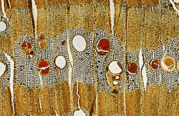
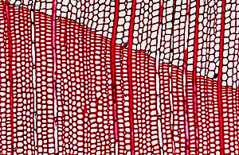

 Other local timbers such as acacia, tamarisk and Christ's thorn were also often used for large coffin planks, but more particularly for the small dowels and pegs which were used by the carpenter to secure the coffin pieces together. The scientific identification of such wood by optical microscopy needs a view of the cellular structure in three different directions: transverse, radial and tangential. All of the images seen here are of transverse sections. Very thin slices (thin sections) of tiny samples taken from the wood are prepared and mounted on glass slides to show a variety of characteristic features under the optical microscope.
 Imported woods, such as the softwood cedar of Lebanon, were sometimes used for the coffins of high-ranking individuals. Other imported softwoods include juniper and pine. Some of the coffins show a mixture of imported and local woods, clearly carefully selected by the Egyptian carpenter for their specific properties. Such properties might include surface appearance (grain), weight, flexibility, durability and resistance to insect attack.